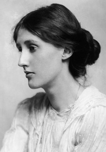

Engleska književnica Virginia Woolf percipirana je ponajviše kao modernistička spisateljica, upamćena po virtuoznoj uporabi modernih narativnih tehnika (struja svijesti, unutarnji monolog), čija su djela u izrazitu odmaku od proznih konvencija XIX. stoljeća. Njezini romani Gospođa Dalloway, K svjetioniku i Valovi vrhunska su ostvarenja moderne i modernističke književnosti, a eseji Vlastita soba i Tri gvineje temeljna djela feminističke književne i kulturalne kritike. U Hrvatskoj enciklopediji možete pročitati kratku biografiju Virginije Woolf i analizu njezinih literarnih i esejističkih djela.
Rođena je u mnogobrojnoj obitelji ugledna povjesničara, leksikografa i književnika Leslieja Stephena, gdje je stekla važnu naobrazbu i družila se s mnogim londonskim intelektualcima i umjetnicima. Sa sestrom i braćom organizirala je salonska okupljanja iz kojih je poslije nastala Bloomsbury Group, intelektualno progresivna družina nazvana prema otmjenoj londonskoj četvrti u kojoj su se sastajali njezini članovi, mahom uglednici raznorodnih struka.
Član grupe bio je i njezin suprug, politolog i književnik Leonard Woolf, koji joj je pomagao pri borbi s dugogodišnjom depresijom i oporavku od životnih gubitaka. Zajedno su 1917. utemeljili nakladničku kuću The Hogarth Press, u kojoj su većinom izdavali njezine radove te istaknuta djela modernih pisaca (npr. znamenitu poemu Pusta zemlja Thomasa Stearnsa Eliota). Narušena psihičkoga zdravlja, počinila je 1941. samoubojstvo utapanjem u rijeci Ouse u Sussexu, blizu ladanjske kuće u koju se sa suprugom preselila 1940.

Već je u svome prvijencu, Izlazak na pučinu (The Voyage Out), najavila neke od svojih kasnijih tematskih preokupacija i stilskih postupaka: sklonost lirizmu i defabularizaciji, zanimanje za ženske likove i teme rodne neravnopravnosti. Svoja je sljedeća djela organizirala oko ključnih duhovnih stanja, neovisnih o vanjskim događajima, ističući zgusnute trenutke neprekinutog tijeka svijesti. Postigla je to prvi put u eksperimentalnome romanu Jakobova soba (Jacob’s Room), sačinjenom od fragmenata sjećanja nekolicine likova. Najpoznatiji joj je i najčitaniji roman Gospođa Dalloway (Mrs. Dalloway), u kojem prikazuje jedan dan u životima Clarisse Dalloway, supruge uglednog člana britanskog Parlamenta, te Septimusa Warrena Smitha, mladoga provincijskog činovnika i veterana Prvoga svjetskog rata. Osobito uspješno dočaran je unutarnji život Clarisse i Septimusa, uzajamno zrcalećih junaka, kroz čiju je fragmentarnu perspektivu vješto oslikano poslijeratno englesko društvo u tranziciji, obilježeno podjednako rastućom modernizacijom kao i političkim, klasnim, ekonomskim i rodnim napetostima. Njezin oblikovno najeksperimentalniji, za dio kritike i najznačajniji roman Valovi (The Waves), gotovo se u potpunosti sastoji od solilokvija šestero prijatelja koji strujom svijesti pripovijedaju priču o svome životu, kao i onomu osebujna preminula prijatelja Percivala. Poput opetovanih motiva valova što udaraju o stijene, pripovjedne svijesti i glasovi likova uzajamno se odražavaju, kontrastiraju i kontrapunktiraju, a na trenutke čak i miješaju, podsjećajući na strukturu glazbene partiture.
Od važnijih prijevoda njezinih djela na hrvatski jezik ističu se Godine (Josip Torbarina, 1946), Svjetionik (Tomislav Ladan, 1974), jedan od hrvatskih prijevodnih vrhunaca moderne svjetske proze, Gospođa Dalloway (Mate Maras, 1981), Orlando: životopis (Jasenka Šafran, 2000), Valovi (Iva Grgić, 2007) i Flush: biografija (Sanja Lovrenčić, 2017).